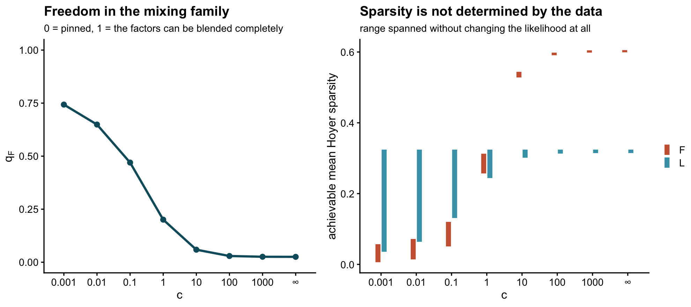
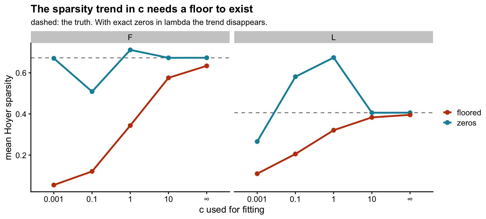

Last updated: 2026-08-02
Checks: 6 1
Knit directory: log1p_experiments/
This reproducible R Markdown analysis was created with workflowr (version 1.7.2). The Checks tab describes the reproducibility checks that were applied when the results were created. The Past versions tab lists the development history.
Great! Since the R Markdown file has been committed to the Git repository, you know the exact version of the code that produced these results.
Great job! The global environment was empty. Objects defined in the global environment can affect the analysis in your R Markdown file in unknown ways. For reproduciblity it’s best to always run the code in an empty environment.
The command set.seed(20240402) was run prior to running
the code in the R Markdown file. Setting a seed ensures that any results
that rely on randomness, e.g. subsampling or permutations, are
reproducible.
Great job! Recording the operating system, R version, and package versions is critical for reproducibility.
To ensure reproducibility of the results, delete the cache directory
log1p_identifiability_cache and re-run the analysis. To
have workflowr automatically delete the cache directory prior to
building the file, set delete_cache = TRUE when running
wflow_build() or wflow_publish().
Great job! Using relative paths to the files within your workflowr project makes it easier to run your code on other machines.
Great! You are using Git for version control. Tracking code development and connecting the code version to the results is critical for reproducibility.
The results in this page were generated with repository version 273420e. See the Past versions tab to see a history of the changes made to the R Markdown and HTML files.
Note that you need to be careful to ensure that all relevant files for
the analysis have been committed to Git prior to generating the results
(you can use wflow_publish or
wflow_git_commit). workflowr only checks the R Markdown
file, but you know if there are other scripts or data files that it
depends on. Below is the status of the Git repository when the results
were generated:
Ignored files:
Ignored: .DS_Store
Ignored: analysis/c_grid_sim_cache/
Ignored: analysis/figure/
Ignored: analysis/log1p_identifiability_cache/
Note that any generated files, e.g. HTML, png, CSS, etc., are not included in this status report because it is ok for generated content to have uncommitted changes.
These are the previous versions of the repository in which changes were
made to the R Markdown (analysis/log1p_identifiability.Rmd)
and HTML (docs/log1p_identifiability.html) files. If you’ve
configured a remote Git repository (see ?wflow_git_remote),
click on the hyperlinks in the table below to view the files as they
were in that past version.
| File | Version | Author | Date | Message |
|---|---|---|---|---|
| Rmd | 273420e | Eric Weine | 2026-08-02 | Trace the sparsity mechanism back to Y and K, removing the circularity |
| html | f37586b | Eric Weine | 2026-08-02 | Build site. |
| Rmd | e3f8c8c | Eric Weine | 2026-08-02 | Explain what sets the joint level of sparsity, not just its split |
| html | 356fc6c | Eric Weine | 2026-08-02 | Build site. |
| Rmd | a85bccf | Eric Weine | 2026-08-02 | Add c-grid simulation results and the identifiability analysis |
library(ggplot2)
library(cowplot)
library(log1pNMF)
theme_set(theme_cowplot(font_size = 11))exp_dir <- path.expand("~/Documents/log1pNMF/inst/paper_figures/experiments")
source(file.path(exp_dir, "c_grid_sim_common.R")) # generator, for the examples
hoyer <- function(v) { v <- abs(v); n <- length(v)
(sqrt(n) - sum(v)/sqrt(sum(v^2))) / (sqrt(n) - 1) }
mean_hoyer <- function(M) mean(apply(M, 2, hoyer))Fitting the log1p model at different \(c\) gives factorizations whose sparsity differs a lot, even when the log-likelihoods are indistinguishable. This page works out why, in general rather than for one simulation: what exactly is unidentified, how much freedom there is, and how \(c\) controls that freedom.
The short version, stated up front:
The likelihood sees only \(\theta = LF'\). For a fixed \(\theta\), \(c\) has no effect on identifiability whatsoever. What \(c\) changes is which \(\theta\) is needed to represent data with given rates — and as \(c \to 0\) that \(\theta\) becomes a large constant plus a bounded perturbation, which is precisely the shape with the largest ambiguity.
The model is
\[ y_{ij}\sim\text{Poisson}(\lambda_{ij}), \qquad \lambda_{ij} = c\left(e^{\theta_{ij}}-1\right), \qquad \theta = LF', \quad L\in\mathbb{R}^{n\times K}_{\ge 0},\ F\in\mathbb{R}^{p\times K}_{\ge 0}. \]
The map \(\theta \mapsto \lambda\) is a fixed, strictly monotone, elementwise transform once \(c\) is chosen. So the log-likelihood is a function of \(\theta\) alone: any two parameter values with the same product \(LF'\) have exactly the same likelihood, for every \(c\). Whatever is not determined by \(\theta\) is not determined by the data, no matter how much data there is.
Suppose \(\theta\) has rank \(K\) and admits a nonnegative rank-\(K\) factorization \(\theta = LF'\). If \(\tilde L\tilde F' = LF'\) is another one, the two share a column space, so \(\tilde L = LA\) for some invertible \(A\), and then \(\tilde F' = A^{-1}F'\). Hence every alternative factorization has the form
\[ (L, F) \;\longmapsto\; \bigl(LA,\; FA^{-\top}\bigr), \qquad A \in \mathcal{A}(L,F) := \bigl\{A \ \text{invertible} \ K\times K : LA \ge 0,\; FA^{-\top} \ge 0\bigr\}. \]
Invertibility is all that is asked of \(A\) itself, and it is forced by the construction, since \(A^{-1}\) has to exist. In particular \(A\) is not required to be nonnegative — only the two products \(LA\) and \(FA^{-\top}\) are. That is where the whole ambiguity lives: if \(A\) and \(A^{-1}\) were both forced nonnegative, \(A\) would have to be monomial and there would be nothing to discuss.
\(\mathcal{A}\) always contains the monomial matrices — a permutation times a positive diagonal — which merely relabel and rescale the factors. That part is harmless. Non-identifiability in the sense that matters is \(\mathcal{A}\) containing anything else.
Write \(a_k\) for the \(k\)th column of \(A\) and \(\tilde a_k\) for the \(k\)th row of \(A^{-1}\). Then
\[ (LA)_{ik} = \langle \ell_i, a_k\rangle, \qquad (FA^{-\top})_{jk} = \langle f_j, \tilde a_k\rangle, \]
so the constraints are
\[ a_k \in \mathcal{C}_L^{*} \ \ \forall k, \qquad \tilde a_k \in \mathcal{C}_F^{*} \ \ \forall k, \]
where \(\mathcal{C}_L\) is the cone generated by the rows of \(L\) and \(\mathcal{C}_L^{*} = \{y : \langle \ell_i, y\rangle \ge 0\ \forall i\}\) is its dual, and likewise for \(F\).
This makes the picture concrete. Since \(L \ge 0\), the cone \(\mathcal{C}_L\) sits inside the nonnegative orthant, so its dual contains the orthant. The more \(\mathcal{C}_L\) fills the orthant, the tighter its dual, and the less room \(A\) has.
Uniqueness by separability. If \(L\) has a pure row for each factor — a sample loading on one factor only — then \(\mathcal{C}_L\) is the whole orthant, so \(\mathcal{C}_L^{*}\) is the orthant and \(A \ge 0\). If \(F\) likewise has a pure row per factor, then \(A^{-1} \ge 0\). A nonnegative matrix with a nonnegative inverse is monomial, so the factorization is unique up to relabelling. Pure rows — equivalently, zeros in the right places — are what pin an NMF down.
Nothing above mentions \(c\). For a fixed \(\theta\) the ambiguity set \(\mathcal{A}\) is fixed, so \(c\) cannot affect identifiability directly. It enters one step earlier: to model data whose rates are \(\lambda\), the required linear predictor is
\[ \theta_c = \log\!\left(1 + \frac{\lambda}{c}\right), \]
and the shape of \(\theta_c\) — hence the geometry above — depends strongly on \(c\). Two limits make this sharp. Let \(\lambda_{\min}\) and \(\lambda_{\max}\) be the smallest and largest rates.
Large \(c\). \(\theta_c \approx \lambda/c\). The shape of \(\theta\) is the shape of \(\lambda\), exactly. Any zeros or near-zeros in \(\lambda\) survive into \(\theta\), and with them the pure rows that pin the factorization.
Small \(c\), with \(\lambda_{\min} > 0\).
\[ \theta_{\min} = \log\!\left(1+\frac{\lambda_{\min}}{c}\right) \xrightarrow[c\to 0]{} \infty, \qquad \theta_{\max}-\theta_{\min} = \log\frac{c+\lambda_{\max}}{c+\lambda_{\min}} \xrightarrow[c\to 0]{} \log\frac{\lambda_{\max}}{\lambda_{\min}}, \]
which is finite. The level of \(\theta\) diverges while its spread stays bounded, so \(\theta / \theta_{\min} \to \mathbf{1}\mathbf{1}'\). As \(c\to 0\) the linear predictor becomes a huge constant plus a bounded perturbation.
A constant matrix is the least identifiable thing a nonnegative factorization can be asked to represent: with \(\theta \approx \kappa\,\mathbf{1}\mathbf{1}'\) every row of \(L\) points at the centre of the simplex, \(\mathcal{C}_L\) collapses to a ray far from the orthant boundary, and \(\mathcal{C}_L^{*}\) becomes enormous.
The one escape is \(\lambda_{\min} = 0\): exact zeros in the rates give \(\theta_{ij}=0\) for every \(c\), since \(\log(1+0/c) = 0\). Exact zeros are preserved by the link; it is near-zeros that get washed out.
## the two limits, on the rates from one simulated dataset
lam <- sim_dataset(1, 1)$lambda
lam <- lam[lam > 0]
shape <- function(cc) { th <- log1p(lam / cc)
c(level = min(th), spread = max(th) - min(th),
`spread / level` = (max(th) - min(th)) / min(th)) }
knitr::kable(t(sapply(c(1e-4, 1e-3, 1e-2, 1e-1, 1, 10, 100, 1e3), shape)) |>
`rownames<-`(format(c(1e-4, 1e-3, 1e-2, 1e-1, 1, 10, 100, 1e3))),
digits = 3,
caption = "theta = log1p(lambda/c) for one fixed set of rates. The spread saturates at log(lambda_max/lambda_min) while the level grows without bound.")| level | spread | spread / level | |
|---|---|---|---|
| 1e-04 | 8.456 | 3.849 | 0.455 |
| 1e-03 | 6.156 | 3.847 | 0.625 |
| 1e-02 | 3.872 | 3.829 | 0.989 |
| 1e-01 | 1.741 | 3.661 | 2.103 |
| 1e+00 | 0.386 | 2.754 | 7.143 |
| 1e+01 | 0.046 | 1.120 | 24.364 |
| 1e+02 | 0.005 | 0.195 | 41.528 |
| 1e+03 | 0.000 | 0.021 | 45.458 |
The full set \(\mathcal{A}\) is awkward — it constrains \(A\) and \(A^{-1}\) simultaneously, so it is not convex. A one-parameter slice through it is enough to get closed forms and the right intuition. Let \(J = \mathbf{1}\mathbf{1}'\) and
\[ B_t \;=\; (1-t)\,I \;+\; \frac{t}{K}J, \qquad B_t^{-1} \;=\; \frac{1}{1-t}\left(I - \frac{t}{K}J\right). \]
\(t\) is a mixing fraction: \(t=0\) is the identity, and \(t\to 1\) blends all \(K\) factors into one. Writing the two sides out, with \(r_i = \sum_k \ell_{ik}\) and \(s_j = \sum_k f_{jk}\),
\[ (LB_t)_{ik} = (1-t)\,\ell_{ik} + \frac{t}{K}\,r_i, \qquad (FB_t^{-1})_{jk} = \frac{1}{1-t}\left(f_{jk} - \frac{t}{K}\,s_j\right). \]
So increasing \(t\) pulls each row of \(L\) toward its own mean — denser — while subtracting a per-feature constant from \(F\) — sparser. This is the essential point: sparsity is not lost, it is moved between the two factors. Nothing here is specific to \(L\).
Both expressions are linear in \(t\), so the constraints resolve exactly. Define the smallest normalized share on each side,
\[ q_L = K\min_{i,k}\frac{\ell_{ik}}{r_i}\in[0,1], \qquad q_F = K\min_{j,k}\frac{f_{jk}}{s_j}\in[0,1]. \]
For \(t \ge 0\) the \(L\) constraint is automatic (both terms are nonnegative), and the \(F\) constraint is \(f_{jk}\ge \tfrac{t}{K}s_j\) for all \(j,k\). For \(t<0\) the roles swap. Hence
\[ \boxed{\;-\frac{q_L}{1-q_L} \;\le\; t \;\le\; q_F\;} \]
\(q_F\) is exactly how far \(F\) is from having a zero: it is \(0\) as soon as any single \(f_{jk}=0\), and \(1\) only if every feature loads equally on all factors. The same reading applies to \(q_L\) on the other side. A single exact zero in \(F\) removes the entire positive branch of this family.
d0 <- sim_dataset(1, 1e-3)
L0 <- d0$truth$L; F0c <- d0$FF_true; KK <- ncol(L0)
qL <- KK * min(L0 / rowSums(L0))
qF <- KK * min(F0c / rowSums(F0c))
feasible <- function(t) {
B <- (1 - t) * diag(KK) + (t / KK) * matrix(1, KK, KK)
min(L0 %*% B) >= -1e-12 && min(F0c %*% t(solve(B))) >= -1e-12
}
bisect <- function(sgn) { lo <- 0; hi <- 1
for (i in 1:60) { m <- (lo + hi)/2; if (feasible(sgn*m)) lo <- m else hi <- m }; sgn*lo }
knitr::kable(data.frame(
bound = c("t_min", "t_max"),
formula = c(-qL/(1 - qL), qF),
numeric = c(bisect(-1), bisect(+1))),
digits = 8, caption = "Closed form against bisection, at c = 0.001.")| bound | formula | numeric |
|---|---|---|
| t_min | 0.000000 | 0.000000 |
| t_max | 0.743069 | 0.743069 |
Under the small-\(c\) limit above, \(\theta \approx \kappa\mathbf{1}\mathbf{1}' + \theta^{*}\) with \(\kappa = \theta_{\min}\to\infty\). Normalizing \(L\) so that \(r_i = 1\), the constant is carried by \(F\): \(f_{jk} = f^{*}_{jk} + \kappa\). Then
\[ q_F = K\min_j \frac{\min_k f^{*}_{jk} + \kappa}{S^{*}_j + K\kappa} \;\xrightarrow[\kappa\to\infty]{}\; 1, \qquad 1 - q_F \;\approx\; \frac{\max_j\bigl(S^{*}_j - K\min_k f^{*}_{jk}\bigr)}{K\kappa}, \]
with \(S^{*}_j = \sum_k f^{*}_{jk}\). So the freedom approaches total as \(c\to0\), and it does so at rate \(1/\kappa = 1/\log(1/c)\) — slowly, but without bound. Conversely \(\kappa \to 0\) recovers \(q_F = K\min_{j,k}f^{*}_{jk}/S^{*}_j\), which is zero the moment \(F^{*}\) has a zero.
The offset is not a modelling artifact: it is pinned by the smallest rate,
\[ \kappa = \theta_{\min} = \log\!\left(1 + \frac{\lambda_{\min}}{c}\right). \]
Using the calibrated generator (see the c-grid page), which builds a truth at each \(c\) with matched marginals, we can read off the feasible interval and the sparsity it buys.
tr <- sim_truth(1)
sweep_c <- do.call(rbind, lapply(C_GRID, function(cc) {
dd <- sim_dataset(1, cc, tr)
L <- dd$truth$L; Fm <- dd$FF_true
th <- dd$alpha * tr$theta0 + dd$beta
qF <- KK * min(Fm / rowSums(Fm))
B <- (1 - qF) * diag(KK) + (qF / KK) * matrix(1, KK, KK)
data.frame(c = cc,
`theta level / spread` = min(th) / (max(th) - min(th)),
q_F = qF,
`Hoyer L: truth` = mean_hoyer(L),
`Hoyer L: at t_max`= mean_hoyer(L %*% B),
`Hoyer F: truth` = mean_hoyer(Fm),
`Hoyer F: at t_max`= mean_hoyer(Fm %*% t(solve(B))),
check.names = FALSE)
}))
knitr::kable(sweep_c, digits = 3, row.names = FALSE)| c | theta level / spread | q_F | Hoyer L: truth | Hoyer L: at t_max | Hoyer F: truth | Hoyer F: at t_max |
|---|---|---|---|---|---|---|
| 1e-03 | 1.671 | 0.743 | 0.324 | 0.036 | 0.006 | 0.057 |
| 1e-02 | 1.066 | 0.649 | 0.324 | 0.064 | 0.014 | 0.072 |
| 1e-01 | 0.508 | 0.470 | 0.324 | 0.131 | 0.051 | 0.120 |
| 1e+00 | 0.140 | 0.201 | 0.324 | 0.244 | 0.257 | 0.313 |
| 1e+01 | 0.031 | 0.059 | 0.324 | 0.301 | 0.528 | 0.544 |
| 1e+02 | 0.015 | 0.029 | 0.324 | 0.313 | 0.591 | 0.598 |
| 1e+03 | 0.013 | 0.026 | 0.324 | 0.314 | 0.598 | 0.605 |
| Inf | 0.013 | 0.025 | 0.324 | 0.315 | 0.599 | 0.605 |
Warning: The above code chunk cached its results, but
it won’t be re-run if previous chunks it depends on are updated. If you
need to use caching, it is highly recommended to also set
knitr::opts_chunk$set(autodep = TRUE) at the top of the
file (in a chunk that is not cached). Alternatively, you can customize
the option dependson for each individual chunk that is
cached. Using either autodep or dependson will
remove this warning. See the
knitr cache options for more details.
lab <- ifelse(is.infinite(sweep_c$c), "∞",
format(sweep_c$c, scientific = FALSE, trim = TRUE, drop0trailing = TRUE))
sweep_c$cf <- factor(lab, levels = lab)
p1 <- ggplot(sweep_c, aes(cf, q_F, group = 1)) +
geom_line(colour = "#0E5C6B", linewidth = 1) + geom_point(colour = "#0E5C6B", size = 2) +
ylim(0, 1) +
labs(x = "c", y = expression(q[F]),
title = "Freedom in the mixing family",
subtitle = "0 = pinned, 1 = the factors can be blended completely")
rng <- rbind(
data.frame(cf = sweep_c$cf, side = "L", lo = sweep_c$`Hoyer L: at t_max`,
hi = sweep_c$`Hoyer L: truth`),
data.frame(cf = sweep_c$cf, side = "F", lo = pmin(sweep_c$`Hoyer F: truth`, sweep_c$`Hoyer F: at t_max`),
hi = pmax(sweep_c$`Hoyer F: truth`, sweep_c$`Hoyer F: at t_max`)))
p2 <- ggplot(rng, aes(cf, ymin = lo, ymax = hi, colour = side)) +
geom_linerange(linewidth = 2.2, alpha = 0.85,
position = position_dodge(width = 0.35)) +
scale_colour_manual(values = c(L = "#0E8FA8", F = "#C2410C"), name = NULL) +
labs(x = "c", y = "achievable mean Hoyer sparsity",
title = "Sparsity is not determined by the data",
subtitle = "range spanned without changing the likelihood at all")
plot_grid(p1, p2, nrow = 1, rel_widths = c(1, 1.15))
| Version | Author | Date |
|---|---|---|
| 356fc6c | Eric Weine | 2026-08-02 |
At \(c=\infty\) the interval is a point: the factorization is effectively pinned. At \(c=10^{-3}\) the sparsity of \(L\) can be driven from the truth’s value down by roughly an order of magnitude, with \(F\) moving the other way, and the likelihood does not change by so much as a rounding error.
\(B_t\) is one line through \(\mathcal{A}\). Searching over all of \(A\in\mathbb{R}^{K \times K}\) gives a slightly wider range, so the closed forms above understate the true freedom.
explore <- function(L, Fm, sgn, nstart = 25, seed = 1) {
K <- ncol(L); set.seed(seed)
obj <- function(v) {
A <- matrix(v, K, K); dt <- det(A)
if (!is.finite(dt) || abs(dt) < 1e-8) return(1e6)
LA <- L %*% A; FA <- Fm %*% t(solve(A))
pen <- sum(pmin(LA, 0)^2) + sum(pmin(FA, 0)^2)
if (pen > 0) return(1e3 + 1e6 * pen)
-sgn * mean_hoyer(LA)
}
best <- NULL; bv <- Inf
for (s in 1:nstart) {
o <- try(optim(as.vector(diag(K) + matrix(rnorm(K*K, 0, .15), K, K)), obj,
control = list(maxit = 3000, reltol = 1e-10)), silent = TRUE)
if (!inherits(o, "try-error") && o$value < bv) { bv <- o$value; best <- o$par }
}
mean_hoyer(L %*% matrix(best, K, K))
}
knitr::kable(do.call(rbind, lapply(c(1e-3, 1, Inf), function(cc) {
dd <- sim_dataset(1, cc, tr); L <- dd$truth$L; Fm <- dd$FF_true
qF <- KK * min(Fm / rowSums(Fm))
B <- (1 - qF) * diag(KK) + (qF / KK) * matrix(1, KK, KK)
data.frame(c = cc, `truth` = mean_hoyer(L),
`mixing slice, lowest` = mean_hoyer(L %*% B),
`full search, lowest` = explore(L, Fm, -1),
check.names = FALSE)
})), digits = 3, row.names = FALSE, caption = "Mean Hoyer sparsity of L.")| c | truth | mixing slice, lowest | full search, lowest |
|---|---|---|---|
| 0.001 | 0.324 | 0.036 | 0.026 |
| 1.000 | 0.324 | 0.244 | 0.227 |
| Inf | 0.324 | 0.315 | 0.315 |
Warning: The above code chunk cached its results, but
it won’t be re-run if previous chunks it depends on are updated. If you
need to use caching, it is highly recommended to also set
knitr::opts_chunk$set(autodep = TRUE) at the top of the
file (in a chunk that is not cached). Alternatively, you can customize
the option dependson for each individual chunk that is
cached. Using either autodep or dependson will
remove this warning. See the
knitr cache options for more details.
Everything above is about where sparsity sits: the mixing family moves it from \(L\) to \(F\) and back, leaving the likelihood untouched. That cannot explain a common observation in practice — that fitting at larger \(c\) makes both \(L\) and \(F\) sparser. A trade cannot raise both. Something else fixes the level.
The constraint is combinatorial. Write \(S_i = \operatorname{supp}(\ell_i)\) for the set of factors sample \(i\) uses, and \(T_j = \operatorname{supp}(f_j)\) for feature \(j\). Since \(L, F \ge 0\) there is no cancellation, so
\[ \theta_{ij} = \langle \ell_i, f_j\rangle > 0 \iff S_i \cap T_j \neq \emptyset . \]
If \(\theta\) is strictly positive everywhere, then every \(S_i\) must meet every \(T_j\) — the two families must be cross-intersecting. That is a strong joint requirement, and it has an immediate consequence:
If any sample uses a single factor, \(S_i = \{k\}\), then every \(T_j\) must contain \(k\): column \(k\) of \(F\) is completely dense.
and symmetrically with the roles swapped. Sparsity on one side is paid for by density on the other, and it is the strictly positive \(\theta\) that sends the bill. A crude but useful sufficient condition is \(|S_i| + |T_j| > K\), which guarantees intersection by pigeonhole; at \(K = 3\) two samples and features each using two of the three factors always overlap, whereas two singletons need not.
So a \(\theta\) bounded away from zero cannot be represented by two sparse nonnegative factors at all — regardless of \(c\), regardless of the optimizer. Conversely, each zero of \(\theta\) relaxes exactly one of these cross-intersection requirements, buying sparsity on both sides at once.
\(\theta_{ij} = 0\) if and only if \(\lambda_{ij} = 0\), at every \(c\) — the link maps zero to zero. What \(c\) controls is the floor under the nonzero entries,
\[ \theta_{\min} = \log\!\left(1 + \frac{\lambda_{\min}}{c}\right), \]
so the useful comparison is not \(c\) in the abstract but \(c\) against the smallest rate in the data:
| regime | \(\theta_{\min}\) | consequence |
|---|---|---|
| \(c \gg \lambda_{\min}\) | \(\approx \lambda_{\min}/c \approx 0\) | no floor; both factors free to be sparse |
| \(c \ll \lambda_{\min}\) | \(\approx \log(\lambda_{\min}/c)\), large | floor; both factors forced dense |
The mechanism is a property of the model. Whether it bites is a property of the data.
First, in the fits from the c-grid page: reconstruct \(\hat\theta = \hat L\hat F'\) at each \(c_{\text{fit}}\) and measure how much of it is an irreducible constant.
cells_dir <- file.path(exp_dir, "c_grid_sim")
knitr::kable(do.call(rbind, lapply(C_GRID, function(cf) {
x <- readRDS(file.path(cells_dir, paste0(
tag_of(list(seed = 1, c_true = 1, c_fit = cf)), ".rds")))
Lh <- x$fits$rank1$LL; Fh <- x$fits$rank1$FF
th <- tcrossprod(Lh, Fh) / max(1, if (is.infinite(cf)) 1 else cf)
data.frame(c_fit = cf, `min theta-hat` = min(th),
`floor share` = min(th)/mean(th),
`Hoyer L` = mean_hoyer(Lh), `Hoyer F` = mean_hoyer(Fh),
check.names = FALSE)
})), digits = 3, row.names = FALSE,
caption = "One dataset (seed 1, simulated at c = 1), fitted at each c. 'floor share' is min(theta)/mean(theta).")| c_fit | min theta-hat | floor share | Hoyer L | Hoyer F |
|---|---|---|---|---|
| 1e-03 | 5.321 | 0.810 | 0.131 | 0.067 |
| 1e-02 | 3.063 | 0.715 | 0.138 | 0.086 |
| 1e-01 | 1.065 | 0.503 | 0.157 | 0.147 |
| 1e+00 | 0.075 | 0.126 | 0.246 | 0.315 |
| 1e+01 | 0.000 | 0.000 | 0.326 | 0.499 |
| 1e+02 | 0.000 | 0.000 | 0.350 | 0.559 |
| 1e+03 | 0.000 | 0.000 | 0.353 | 0.567 |
| Inf | 0.000 | 0.000 | 0.353 | 0.568 |
The floor share falls from 0.81 to 0 and both sparsities rise with it. At \(c_{\text{fit}} \ge 10\) the fit puts exact zeros into \(\hat\theta\) (minimum around \(10^{-13}\)) and sparsity reaches its maximum.
Correlation is not mechanism. If the floor is really the cause, then data whose rates contain exact zeros should show no systematic sparsity trend in \(c\), because those zeros survive every \(c\).
Build two datasets from one truth with sparse supports on both sides, calibrated to the same 60% zero fraction in \(Y\), differing only in whether an offset is allowed:
suppressMessages(library(fastTopics))
nn <- 300; pp <- 300; Kz <- 3
set.seed(11)
Lz <- matrix(0, nn, Kz)
for (i in 1:nn) { S <- sample(Kz, sample(1:2, 1)); w <- rgamma(length(S), .5)
Lz[i, S] <- w / sum(w) }
Fz <- matrix(0, pp, Kz)
for (j in 1:pp) { S <- sample(Kz, sample(1:2, 1))
Fz[j, S] <- exp(runif(length(S), -3.5, 3.5)) }
th0z <- Lz %*% t(Fz)
zfrac <- function(lam) mean(exp(-lam))
lam_of <- function(a, b, cc) { th <- a*th0z + b
if (is.infinite(cc)) th else cc*expm1(pmin(th, 700)) }
## zeros arm: offset forced to 0, one knob for the zero fraction
cal_zero <- function(cc, tz = 0.6)
exp(uniroot(function(la) zfrac(lam_of(exp(la), 0, cc)) - tz,
c(-14, 10), extendInt = "downX")$root)
## floored arm: two knobs, same zero fraction plus an upper-quantile target
cal_floor <- function(cc, tz = 0.6, tq = 20, qp = 0.999) {
bmax <- if (is.infinite(cc)) 1e6 else log1p(1e6/cc)
bfor <- function(a) { f <- function(b) zfrac(lam_of(a, b, cc)) - tz
if (f(0) <= 0) return(0); uniroot(f, c(0, bmax), tol = 1e-12)$root }
g <- function(la) { a <- exp(la)
as.numeric(quantile(lam_of(a, bfor(a), cc), qp)) - tq }
hi <- log(200 / max(th0z)); a <- exp(uniroot(g, c(hi - 30, hi), tol = 1e-10)$root)
c(a = a, b = bfor(a))
}
c(`theta0 exact zeros` = mean(th0z == 0),
`true Hoyer L` = mean_hoyer(Lz), `true Hoyer F` = mean_hoyer(Fz))theta0 exact zeros true Hoyer L true Hoyer F
0.3438111 0.4059545 0.6729524
Warning: The above code chunk cached its results, but
it won’t be re-run if previous chunks it depends on are updated. If you
need to use caching, it is highly recommended to also set
knitr::opts_chunk$set(autodep = TRUE) at the top of the
file (in a chunk that is not cached). Alternatively, you can customize
the option dependson for each individual chunk that is
cached. Using either autodep or dependson will
remove this warning. See the
knitr cache options for more details.
fit_one <- function(Y, cf) {
set.seed(7)
if (is.infinite(cf)) {
f <- fit_poisson_nmf(as(Y, "CsparseMatrix"), k = Kz, numiter = 3000,
method = "scd", control = list(nc = 2, min.delta.loglik = 1e-6),
verbose = "none")
list(L = f$L, F = f$F)
} else {
f <- fit_poisson_log1p_nmf(Y, K = Kz, cc = cf, s = FALSE, loglik = "exact",
init_method = "rank1",
control = list(maxiter = 4000, tol = 1e-6, verbose = FALSE, threads = 2))
list(L = f$LL, F = f$FF)
}
}
CZ <- c(1e-3, 1e-1, 1, 10, Inf)
zres <- do.call(rbind, lapply(c("zeros", "floored"), function(arm) {
do.call(rbind, lapply(CZ, function(cf) {
ab <- if (arm == "zeros") c(a = cal_zero(cf), b = 0) else cal_floor(cf)
lam <- lam_of(ab[["a"]], ab[["b"]], cf)
set.seed(5); Y <- matrix(rpois(length(lam), lam), nn, pp)
Y <- Y[rowSums(Y) > 0, colSums(Y) > 0, drop = FALSE]
z <- fit_one(Y, cf)
data.frame(arm = arm, c_fit = cf,
`min lambda` = min(lam), `zeros in Y` = mean(Y == 0),
`Hoyer L` = mean_hoyer(z$L), `Hoyer F` = mean_hoyer(z$F),
check.names = FALSE)
}))
}))Stopping condition is met at iteration 9: change in NMF loglik < 1.00e-06
Stopping condition is met at iteration 31: change in NMF loglik < 1.00e-06knitr::kable(zres, digits = 3, row.names = FALSE,
caption = paste("Same truth, matched zero fraction. True Hoyer:",
sprintf("L %.3f, F %.3f.", mean_hoyer(Lz), mean_hoyer(Fz))))| arm | c_fit | min lambda | zeros in Y | Hoyer L | Hoyer F |
|---|---|---|---|---|---|
| zeros | 1e-03 | 0.000 | 0.565 | 0.266 | 0.671 |
| zeros | 1e-01 | 0.000 | 0.600 | 0.581 | 0.509 |
| zeros | 1e+00 | 0.000 | 0.601 | 0.674 | 0.712 |
| zeros | 1e+01 | 0.000 | 0.601 | 0.406 | 0.673 |
| zeros | Inf | 0.000 | 0.601 | 0.406 | 0.673 |
| floored | 1e-03 | 0.401 | 0.602 | 0.109 | 0.054 |
| floored | 1e-01 | 0.393 | 0.603 | 0.205 | 0.120 |
| floored | 1e+00 | 0.348 | 0.603 | 0.321 | 0.344 |
| floored | 1e+01 | 0.244 | 0.601 | 0.383 | 0.576 |
| floored | Inf | 0.170 | 0.601 | 0.396 | 0.634 |
## long form: the two Hoyer columns have different names, so build it explicitly
zl <- rbind(
data.frame(arm = zres$arm, c_fit = zres$c_fit, side = "L", h = zres[["Hoyer L"]]),
data.frame(arm = zres$arm, c_fit = zres$c_fit, side = "F", h = zres[["Hoyer F"]]))
zl$side <- factor(zl$side, levels = c("L", "F"))
zl$cf <- factor(ifelse(is.infinite(zl$c_fit), "∞",
format(zl$c_fit, scientific = FALSE, trim = TRUE,
drop0trailing = TRUE)),
levels = c("0.001", "0.1", "1", "10", "∞"))
truth <- data.frame(side = c("L", "F"),
h = c(mean_hoyer(Lz), mean_hoyer(Fz)))
ggplot(zl, aes(cf, h, colour = arm, group = arm)) +
geom_hline(data = truth, aes(yintercept = h), linetype = "dashed",
colour = "grey50") +
geom_line(linewidth = 1) + geom_point(size = 2) +
facet_wrap(~ side) +
scale_colour_manual(values = c(zeros = "#0E8FA8", floored = "#C2410C"),
name = NULL) +
labs(x = "c used for fitting", y = "mean Hoyer sparsity",
title = "The sparsity trend in c needs a floor to exist",
subtitle = "dashed: the truth. With exact zeros in lambda the trend disappears.")
| Version | Author | Date |
|---|---|---|
| f37586b | Eric Weine | 2026-08-02 |
With exact zeros the trend is gone: at \(c_{\text{fit}} = 10\) and \(\infty\) both factors are recovered essentially exactly, and small \(c\) no longer collapses them. With a floor the familiar monotone climb returns.
A residual effect does survive at the smallest \(c\) in the zeros arm — \(L\) comes out somewhat denser than the truth while \(F\) does not. Exact zeros are preserved at every \(c\), but the nonzero entries of \(\theta\) are still compressed toward a common large value as \(c \to 0\), so near-purity degrades even when exact purity does not. The effect is far weaker than with a floor, and it does not hit both factors at once.
In the calibrated generator used on the c-grid page, the offset makes \(\lambda_{\min} = c\,\text{expm1}(\beta_c)\), which lands at about \(0.47\) against a median rate near \(0.52\) — a floor at roughly 90% of the median. That is far higher than real count data, where the least-expressed feature in the shallowest sample sits orders of magnitude below the median. With a realistic \(\lambda_{\min}\), \(c = 1\) is comfortably in the \(c \gg \lambda_{\min}\) regime and sparsity is not suppressed at all; the effect only appears when fitting with a \(c\) below the smallest rate present.
So the mechanism generalizes, but the magnitude in that simulation is inflated by its own calibration, which is the price paid for making the datasets comparable across \(c\).
Everything so far conditions on the true \(\lambda\), which you never have. In practice you hold \(Y\), you fit at several \(c\), and most of those \(c\) are misspecified. Saying “the floor of \(\hat\theta\) controls the sparsity” is then circular, because \(\hat\theta\) is the fit. This section removes the circularity by tracing the floor back to quantities fixed by \(Y\) and \(K\) alone.
The Poisson log-likelihood is
\[ \ell(\lambda) = \sum_{ij}\bigl[y_{ij}\log\lambda_{ij} - \lambda_{ij}\bigr] - \sum_{ij}\log y_{ij}!, \]
a function of the rates and the data only. \(c\) appears nowhere in it. Where \(c\) does appear is the feasible set,
\[ \mathcal{M}_c(K) = \Bigl\{\lambda \ge 0 \;:\; \log\!\left(1+\tfrac{\lambda}{c}\right) = LF',\ \ L,F\ge 0,\ \text{rank } K\Bigr\}, \]
and the fit is \(\hat\lambda = \arg\max_{\lambda\in\mathcal{M}_c(K)}\ell(\lambda)\). So \(c\) never changes what a good set of rates is. It changes only which rate matrices are reachable. That is the wedge that breaks the circle: if we can pin down properties of \(\hat\lambda\) without reference to \(c\), the rest follows mechanically.
Let \(R_k = \{i : \ell_{ik} > 0\}\) and \(C_k = \{j : f_{jk} > 0\}\) be the sets of samples and features that use factor \(k\). Because \(L, F \ge 0\) there is no cancellation, so \(\theta_{ij} = \sum_k \ell_{ik}f_{jk} > 0\) exactly when some \(k\) has \(i \in R_k\) and \(j \in C_k\). Therefore
\[ \operatorname{supp}(\theta) \;=\; \bigcup_{k=1}^{K} R_k \times C_k , \]
a union of \(K\) combinatorial rectangles — and since \(\lambda_{ij} = 0\) iff \(\theta_{ij}=0\), the zero set of any fitted rate matrix is the complement of a union of \(K\) rectangles, at every \(c\).
Now add the data. If \(y_{ij} > 0\) and \(\hat\lambda_{ij}=0\) the log-likelihood is \(-\infty\), so a feasible fit must satisfy
\[ \{(i,j) : y_{ij} > 0\} \;\subseteq\; \bigcup_{k=1}^{K} R_k \times C_k . \]
The nonzero pattern of \(Y\) must be covered by \(K\) rectangles. For count data whose nonzeros are scattered — which is what Poisson sampling produces, since \(y_{ij}=0\) occurs independently with probability \(e^{-\lambda_{ij}}\) — no small collection of rectangles can cover the nonzeros while leaving much uncovered. The rectangles are forced to be nearly the full matrix, so the fit’s zero set is nearly empty and \(\hat\lambda > 0\) essentially everywhere.
This is the crucial step and it is completely free of \(c\): it depends only on \(Y\)’s nonzero pattern and on \(K\). A rank-\(K\) model cannot represent scattered sampling zeros as structural zeros, so it smooths across them and returns a strictly positive low-rank rate surface with some positive low end \(\lambda_{\text{low}}\) — a property of the data and the rank, not of the link.
Given a low end \(\lambda_{\text{low}}\) fixed by Step 2, the low end of \(\theta\) follows with no further modelling:
\[ \theta_{\text{low}} \;=\; \log\!\left(1+\frac{\lambda_{\text{low}}}{c}\right), \qquad \frac{\theta_{\text{low}}}{\overline{\theta}} \;=\; \frac{\log(1+\lambda_{\text{low}}/c)}{\overline{\log(1+\hat\lambda/c)}} . \]
The two limits are immediate. For \(c \gg \lambda_{\text{low}}\) both numerator and denominator linearize and the floor share tends to \(\lambda_{\text{low}}/\overline{\lambda}\) — small whenever the rates are spread out. For \(c \ll \lambda_{\text{low}}\) both behave like \(\log(1/c)\) and the ratio tends to 1: θ becomes all floor.
So the same data, with the same fitted rates, produces a θ whose floor share runs from \(\lambda_{\text{low}}/\overline{\lambda}\) up to \(1\) purely as a function of \(c\). Nothing about the fit changed; only the transform did.
This is the support-intersection argument from the previous section. A θ bounded away from zero requires every \(S_i\) to meet every \(T_j\), and a single-factor sample forces a fully dense factor. Combining the four steps:
\[ \underbrace{Y,\,K}_{\text{fix }\lambda_{\text{low}}} \;\longrightarrow\; \underbrace{\theta_{\text{low}} = \log(1+\lambda_{\text{low}}/c)}_{\text{deterministic in } c} \;\longrightarrow\; \underbrace{\text{support intersection}}_{\text{combinatorial}} \;\longrightarrow\; \text{joint density of } L \text{ and } F . \]
Only the middle arrow involves \(c\), and it involves nothing else.
If the chain is right, the floor is predictable from \(Y\) and \(c\) with no model fitted at all. Estimate the rates by the rank-1 independence model — row totals times column totals over the grand total — and push them through the link:
\[ m_{ij} = \frac{y_{i\cdot}\,y_{\cdot j}}{y_{\cdot\cdot}}, \qquad \widehat{\text{floor share}} = \frac{q_\alpha\bigl(\log(1+m/c)\bigr)}{\overline{\log(1+m/c)}} . \]
QA <- 0.01 # a low quantile, not the minimum -- see the caveat below
pred_obs <- do.call(rbind, lapply(C_GRID, function(cf) {
r <- do.call(rbind, lapply(1:10, function(sd) {
Y <- sim_dataset(sd, 1)$Y
m <- outer(rowSums(Y), colSums(Y)) / sum(Y) # fit-free rate estimate
tg <- if (is.infinite(cf)) m else log1p(m / cf)
x <- readRDS(file.path(cells_dir, paste0(
tag_of(list(seed = sd, c_true = 1, c_fit = cf)), ".rds")))
g <- lapply(c("rank1", "random"), function(i) {
L <- x$fits[[i]]$LL; Fm <- x$fits[[i]]$FF
th <- tcrossprod(L, Fm) / max(1, if (is.infinite(cf)) 1 else cf)
c(fl = as.numeric(quantile(th, QA)) / mean(th), h = mean_hoyer(L)) })
c(min_m = min(m),
predicted = as.numeric(quantile(tg, QA)) / mean(tg),
observed = g[[1]]["fl"],
init_disagreement = abs(g[[1]]["h"] - g[[2]]["h"]))
}))
as.data.frame(t(c(c_fit = cf, colMeans(r))))
}))
knitr::kable(pred_obs, digits = c(3, 4, 3, 3, 6), row.names = FALSE,
caption = "min_m and 'predicted' use only Y and c. Nothing is fitted to produce them.")| c_fit | min_m | predicted | observed.fl | init_disagreement.h |
|---|---|---|---|---|
| 1e-03 | 0.2829 | 0.881 | 0.880 | 0.051611 |
| 1e-02 | 0.2829 | 0.822 | 0.820 | 0.028600 |
| 1e-01 | 0.2829 | 0.689 | 0.683 | 0.008096 |
| 1e+00 | 0.2829 | 0.477 | 0.453 | 0.002094 |
| 1e+01 | 0.2829 | 0.355 | 0.319 | 0.000005 |
| 1e+02 | 0.2829 | 0.330 | 0.285 | 0.000003 |
| 1e+03 | 0.2829 | 0.327 | 0.280 | 0.000004 |
| Inf | 0.2829 | 0.327 | 0.279 | 0.000003 |
Warning: The above code chunk cached its results, but
it won’t be re-run if previous chunks it depends on are updated. If you
need to use caching, it is highly recommended to also set
knitr::opts_chunk$set(autodep = TRUE) at the top of the
file (in a chunk that is not cached). Alternatively, you can customize
the option dependson for each individual chunk that is
cached. Using either autodep or dependson will
remove this warning. See the
knitr cache options for more details.
lg <- function(x) log10(pmax(x, 1e-12))
c(`cor(predicted, observed)` = cor(pred_obs$predicted, pred_obs$observed),
`cor(predicted, log10 disagreement)` = cor(pred_obs$predicted, lg(pred_obs$init_disagreement)),
`cor(observed, log10 disagreement)` = cor(pred_obs$observed, lg(pred_obs$init_disagreement))) cor(predicted, observed) cor(predicted, log10 disagreement)
0.9998288 0.9512599
cor(observed, log10 disagreement)
0.9551765 Two things to read here. The prediction tracks the realized floor essentially exactly, and it also tracks initialization disagreement — how far apart two starts land in Hoyer sparsity at the same \(c\). That disagreement is a purely empirical fingerprint of non-identifiability: same data, log-likelihoods equal to within 0.008, different answer. Being able to forecast it from \(Y\) and \(c\) before fitting is the sense in which the explanation is not circular.
Note also that min_m is identical at every \(c\) — it is a property of \(Y\) alone. All of the variation in the
predicted floor comes from the link.
Minimum-based statistics are fragile. Using \(\min\hat\theta\) rather than a low quantile, the floor reads as \(0\) for \(c \ge 10\) because coordinate descent drives a single coordinate to around \(10^{-13}\), while the bulk of the low end sits near \(0.28\). One entry out of \(90{,}000\) flips the diagnostic. The \(1\%\) quantile is stable and tracks the prediction with correlation \(1.000\).
\(q_F\) computed on a fit is useless for the same reason. The closed form \(q_F = K\min_{j,k} f_{jk}/s_j\) is exactly right for the truth, but evaluated on fitted factors it returns \(\sim 10^{-12}\) at every \(c\) — one numerically-zero coordinate destroys the minimum, reporting “no freedom” for factorizations that are visibly loose. Replacing the minimum with a \(5\%\) quantile restores it (correlation \(0.96\) with initialization disagreement); at a \(25\%\) quantile it is dead again, so the information really does live near the boundary.
The fitted rates are pinned by the data; the split of sparsity between \(L\) and \(F\) is not; and the joint level of sparsity is set by where \(c\) places the data’s rate floor on the log1p curve. So:
The likelihood determines \(LF'\), not \(L\) and \(F\) separately. Any reported sparsity, or any statement that one factor is “cleaner” than another, is a statement about the point in \(\mathcal{A}\) your optimizer happened to reach.
Sparsity trades between the two factors. The mixing family makes \(L\) denser and \(F\) sparser simultaneously. Reporting sparsity for one without the other can be actively misleading.
But the joint level is a separate question, fixed by a different mechanism: \(\theta_{ij} > 0\) requires \(\operatorname{supp}(\ell_i)\) and \(\operatorname{supp}(f_j)\) to intersect, so a \(\theta\) bounded away from zero cannot be built from two sparse factors at all. Zeros in \(\theta\) relax those requirements and buy sparsity on both sides at once.
Zeros are what buy identifiability, and they must be exact or nearly so. \(q_F\) is zero as soon as one \(f_{jk}\) is, and grows smoothly as \(F\) retreats from the boundary.
\(c\) controls both effects through the level of \(\theta\). Small \(c\) forces \(\theta_{\min} = \log(1+\lambda_{\min}/c)\) up while the spread saturates at \(\log(\lambda_{\max}/\lambda_{\min})\), so \(\theta\) tends to a constant: the ambiguity tends to total and the floor forbids joint sparsity. The right comparison is \(c\) against \(\lambda_{\min}\), not \(c\) on its own.
The exception is exact zeros in \(\lambda\), which survive every \(c\) since the link maps zero to zero. Given them, the sparsity trend in \(c\) disappears entirely — which is the test that separates “inherent to the model” from “a property of this data”.
None of this needs the truth. The likelihood objective contains no \(c\); \(c\) only restricts the feasible set. A rank-\(K\) model cannot represent scattered sampling zeros as structural zeros – its zero set is always the complement of a union of \(K\) rectangles – so it returns a strictly positive rate surface whose low end is fixed by \(Y\) and \(K\). \(c\) then decides where that floor lands on the log1p curve, and the floor is what forbids joint sparsity. Every link is checkable on your own data: a rank-1 estimate of the rates pushed through the link predicts the realized floor, and predicts initialization disagreement, before any model is fitted.
Practical consequence. At small \(c\), prefer conclusions that depend on \(LF'\) (fitted rates, held-out likelihood, which samples resemble which) over conclusions that depend on the split (how sparse the factors are, how many features a factor “uses”). Sparsity is not comparable across \(c\). If the split matters, it has to be pinned by something outside the likelihood – a sparsity penalty, a prior, or an anchor assumption.
sessionInfo()R version 4.5.2 (2025-10-31)
Platform: aarch64-apple-darwin20
Running under: macOS Ventura 13.5
Matrix products: default
BLAS: /System/Library/Frameworks/Accelerate.framework/Versions/A/Frameworks/vecLib.framework/Versions/A/libBLAS.dylib
LAPACK: /Library/Frameworks/R.framework/Versions/4.5-arm64/Resources/lib/libRlapack.dylib; LAPACK version 3.12.1
locale:
[1] en_US.UTF-8/en_US.UTF-8/en_US.UTF-8/C/en_US.UTF-8/en_US.UTF-8
time zone: America/Chicago
tzcode source: internal
attached base packages:
[1] stats graphics grDevices utils datasets methods base
other attached packages:
[1] fastTopics_0.7-38 log1pNMF_0.1-6 cowplot_1.2.0 ggplot2_4.0.3
[5] workflowr_1.7.2
loaded via a namespace (and not attached):
[1] tidyselect_1.2.1 viridisLite_0.4.3 dplyr_1.2.1
[4] farver_2.1.2 S7_0.2.2 fastmap_1.2.0
[7] lazyeval_0.2.3 promises_1.5.0 digest_0.6.39
[10] lifecycle_1.0.5 processx_3.9.0 invgamma_1.2
[13] magrittr_2.0.5 compiler_4.5.2 rlang_1.2.0
[16] sass_0.4.10 progress_1.2.3 tools_4.5.2
[19] yaml_2.3.12 data.table_1.18.2.1 knitr_1.51
[22] labeling_0.4.3 prettyunits_1.2.0 htmlwidgets_1.6.4
[25] plyr_1.8.9 RColorBrewer_1.1-3 Rtsne_0.17
[28] withr_3.0.2 purrr_1.2.2 grid_4.5.2
[31] git2r_0.36.2 scales_1.4.0 gtools_3.9.5
[34] MASS_7.3-65 dichromat_2.0-0.1 cli_3.6.6
[37] rmarkdown_2.31 crayon_1.5.3 startupmsg_1.0.0
[40] generics_0.1.4 otel_0.2.0 RcppParallel_5.1.11-2
[43] rstudioapi_0.18.0 httr_1.4.8 reshape2_1.4.5
[46] pbapply_1.7-4 cachem_1.1.0 stringr_1.6.0
[49] parallel_4.5.2 vctrs_0.7.3 Matrix_1.7-5
[52] jsonlite_2.0.0 callr_3.7.6 hms_1.1.4
[55] mixsqp_0.3-54 ggrepel_0.9.8 irlba_2.3.7
[58] plotly_4.12.0 jquerylib_0.1.4 tidyr_1.3.2
[61] glue_1.8.1 codetools_0.2-20 uwot_0.2.4
[64] stringi_1.8.7 gtable_0.3.6 later_1.4.8
[67] sfsmisc_1.1-23 quadprog_1.5-8 tibble_3.3.1
[70] pillar_1.11.1 htmltools_0.5.9 truncnorm_1.0-9
[73] R6_2.6.1 rprojroot_2.1.1 evaluate_1.0.5
[76] lattice_0.22-9 RhpcBLASctl_0.23-42 SQUAREM_2026.1
[79] ashr_2.2-63 httpuv_1.6.17 bslib_0.10.0
[82] Rcpp_1.1.1-1.1 distr_2.9.7 whisker_0.4.1
[85] xfun_0.57 fs_2.1.0 getPass_0.2-4
[88] pkgconfig_2.0.3
sessionInfo()R version 4.5.2 (2025-10-31)
Platform: aarch64-apple-darwin20
Running under: macOS Ventura 13.5
Matrix products: default
BLAS: /System/Library/Frameworks/Accelerate.framework/Versions/A/Frameworks/vecLib.framework/Versions/A/libBLAS.dylib
LAPACK: /Library/Frameworks/R.framework/Versions/4.5-arm64/Resources/lib/libRlapack.dylib; LAPACK version 3.12.1
locale:
[1] en_US.UTF-8/en_US.UTF-8/en_US.UTF-8/C/en_US.UTF-8/en_US.UTF-8
time zone: America/Chicago
tzcode source: internal
attached base packages:
[1] stats graphics grDevices utils datasets methods base
other attached packages:
[1] fastTopics_0.7-38 log1pNMF_0.1-6 cowplot_1.2.0 ggplot2_4.0.3
[5] workflowr_1.7.2
loaded via a namespace (and not attached):
[1] tidyselect_1.2.1 viridisLite_0.4.3 dplyr_1.2.1
[4] farver_2.1.2 S7_0.2.2 fastmap_1.2.0
[7] lazyeval_0.2.3 promises_1.5.0 digest_0.6.39
[10] lifecycle_1.0.5 processx_3.9.0 invgamma_1.2
[13] magrittr_2.0.5 compiler_4.5.2 rlang_1.2.0
[16] sass_0.4.10 progress_1.2.3 tools_4.5.2
[19] yaml_2.3.12 data.table_1.18.2.1 knitr_1.51
[22] labeling_0.4.3 prettyunits_1.2.0 htmlwidgets_1.6.4
[25] plyr_1.8.9 RColorBrewer_1.1-3 Rtsne_0.17
[28] withr_3.0.2 purrr_1.2.2 grid_4.5.2
[31] git2r_0.36.2 scales_1.4.0 gtools_3.9.5
[34] MASS_7.3-65 dichromat_2.0-0.1 cli_3.6.6
[37] rmarkdown_2.31 crayon_1.5.3 startupmsg_1.0.0
[40] generics_0.1.4 otel_0.2.0 RcppParallel_5.1.11-2
[43] rstudioapi_0.18.0 httr_1.4.8 reshape2_1.4.5
[46] pbapply_1.7-4 cachem_1.1.0 stringr_1.6.0
[49] parallel_4.5.2 vctrs_0.7.3 Matrix_1.7-5
[52] jsonlite_2.0.0 callr_3.7.6 hms_1.1.4
[55] mixsqp_0.3-54 ggrepel_0.9.8 irlba_2.3.7
[58] plotly_4.12.0 jquerylib_0.1.4 tidyr_1.3.2
[61] glue_1.8.1 codetools_0.2-20 uwot_0.2.4
[64] stringi_1.8.7 gtable_0.3.6 later_1.4.8
[67] sfsmisc_1.1-23 quadprog_1.5-8 tibble_3.3.1
[70] pillar_1.11.1 htmltools_0.5.9 truncnorm_1.0-9
[73] R6_2.6.1 rprojroot_2.1.1 evaluate_1.0.5
[76] lattice_0.22-9 RhpcBLASctl_0.23-42 SQUAREM_2026.1
[79] ashr_2.2-63 httpuv_1.6.17 bslib_0.10.0
[82] Rcpp_1.1.1-1.1 distr_2.9.7 whisker_0.4.1
[85] xfun_0.57 fs_2.1.0 getPass_0.2-4
[88] pkgconfig_2.0.3